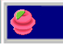

Space Otterssey
Thesis Project: Space Otterssey
Advisor:
Felix Heide
Year: September 2023 - April 2024
Github:
Repository Link
This project shows the capabilites of shader languages, such as GLSL, including
their ability to quickly render visually pleasing graphics without the need of imported mesh
files or outside knowledge in 3D modeling.
GLSL, a shader language that is built off of OpenGL, has a few key benefits: the developer
can represent dynamic objects using code, no outside software or knowledge in a 3D modeling
software is needed, animating object meshes using GLSL shaders is simple, and GLSL shaders
increase the control over the rendering process of meshes within a game.
I created animated graphics for my game Space Otterssey easily using GLSL. In the above videos
the items are referred to in order, blueberry item, strawberry item, and grape item. An example
of the GLSL shader file that creates the strawberry item is below:
uniform float uTime;
varying vec3 vPosition;
varying vec3 vNormal;
varying vec2 vUv;
varying float vDisplacement;
#define PI 3.1415926535897932384626433832795
/*
* SMOOTH MOD
* - authored by @charstiles -
* based on https://math.stackexchange.com/questions/2491494/does-there-exist-a-smooth-approximation
* -of-x-bmod-y
* (axis) input axis to modify
* (amp) amplitude of each edge/tip
* (rad) radius of each edge/tip
* returns => smooth edges
*/
float smoothMod(float axis, float amp, float rad){
float top = cos(PI * (axis / amp)) * sin(PI * (axis / amp));
float bottom = pow(sin(PI * (axis / amp)), 2.0) + pow(rad, 2.0);
float at = atan(top / bottom);
return amp * (1.0 / 2.0) - (1.0 / PI) * at;
}
float fit(float unscaled, float originalMin, float originalMax, float minAllowed, float maxAllowed) {
return (maxAllowed - minAllowed) * (unscaled - originalMin) / (originalMax - originalMin) + minAllowed;
}
float waveY(vec3 position) {
return fit(smoothMod(position.y * 2.0, 1.5, 0.75), 0.35, 0.6, 0.0, 0.9);
}
void main() {
vec3 coords = normal;
coords.y += uTime;
vec3 noisePattern = coords;
float pattern = waveY(noisePattern);
// varyings
vPosition = position;
vNormal = normal;
vUv = uv;
vDisplacement = pattern;
float displacement = vDisplacement ;
// MVP
vec3 newPosition = position + normal * displacement;
vec4 modelViewPosition = modelViewMatrix * vec4( newPosition, 1.0 );
vec4 projectedPosition = projectionMatrix * modelViewPosition;
gl_Position = projectedPosition;
}
I also animated more rigid structures like the posion item implemented to counteract
the fruit elements, giving the game a diverse range of textures and elements.
Below is a demo of the Space Otterssey game play: